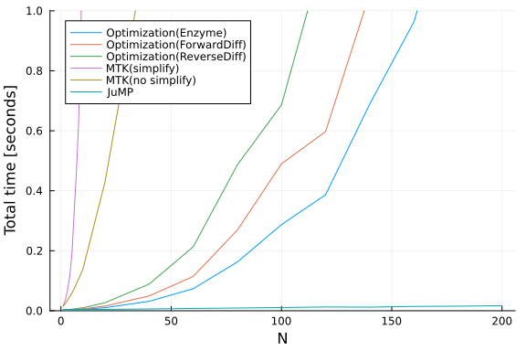

CLNLBEAM Nonlinear Optimization Benchmark
Introduction
This benchmark is the clnlbeam example, adapted from H. Maurer and H.D. Mittelman, "The non-linear beam via optimal control with bound state variables," Optimal Control Applications and Methods 12, pp.19-31, 1991.
This benchmark uses the following packages:
import Enzyme
import ForwardDiff
import Ipopt
import JuMP
import ModelingToolkit as MTK
import Optimization
import OptimizationMOI
import Plots
import ReverseDiff
import SparseDiffTools
import TestOptimization.jl
function run_optimization(N::Int, automatic_differentiation)
h = 1 / N
alpha = 350
x_offset = N + 1
u_offset = 2(N + 1)
function objective_fn(x, p)
return sum(
0.5 * h * (x[x_offset+i+1]^2 + x[x_offset+i]^2) +
0.5 * alpha * h * (cos(x[i+1]) + cos(x[i])) for i in 1:N
)
end
function constraint_fn(res, x, p)
for i in 1:N
res[i] = x[x_offset+i+1] - x[x_offset+i] - 0.5 * h * (sin(x[i+1]) + sin(x[i]))
end
for i in 1:N
res[N+i] = x[i+1] - x[i] - 0.5 * h * x[u_offset+i+1] - 0.5 * h * x[u_offset+i]
end
return
end
prob = Optimization.OptimizationProblem(
Optimization.OptimizationFunction(
objective_fn,
automatic_differentiation;
cons = constraint_fn,
),
zeros(3 * (N + 1)),
nothing;
lb = vcat(fill(-1.0, N+1), fill(-0.05, N+1), fill(-Inf, N+1)),
ub = vcat(fill(1.0, N+1), fill(0.05, N+1), fill(Inf, N+1)),
lcons = zeros(2 * N),
ucons = zeros(2 * N),
)
sol = Optimization.solve(prob, Ipopt.Optimizer(); print_level = 0)
Test.@test ≈(sol.objective, 350.0; atol = 1e-6)
Test.@test ≈(sol.u, zeros(3 * (N + 1)); atol = 1e-6)
return
endrun_optimization (generic function with 1 method)We test three different backends to Optimization.jl:
function run_enzyme_diff(N::Int)
run_optimization(N, Optimization.AutoEnzyme())
return
end
function run_forward_diff(N::Int)
run_optimization(N, Optimization.AutoSparseForwardDiff())
return
end
function run_reverse_diff(N::Int)
run_optimization(N, Optimization.AutoSparseReverseDiff(true))
return
endrun_reverse_diff (generic function with 1 method)JuMP.jl
function run_jump(N::Int)
h = 1 / N
alpha = 350
model = JuMP.Model(Ipopt.Optimizer)
JuMP.set_attribute(model, "print_level", 0)
JuMP.@variables(model, begin
-1 <= t[1:(N+1)] <= 1
-0.05 <= x[1:(N+1)] <= 0.05
u[1:(N+1)]
end)
JuMP.@objective(
model,
Min,
sum(
0.5 * h * (u[i+1]^2 + u[i]^2) +
0.5 * alpha * h * (cos(t[i+1]) + cos(t[i])) for i in 1:N
),
)
JuMP.@constraint(
model,
[i = 1:N],
x[i+1] - x[i] - 0.5 * h * (sin(t[i+1]) + sin(t[i])) == 0,
)
JuMP.@constraint(
model,
[i = 1:N],
t[i+1] - t[i] - 0.5 * h * u[i+1] - 0.5 * h * u[i] == 0,
)
JuMP.optimize!(model)
Test.@test ≈(JuMP.objective_value(model), 350.0; atol = 1e-6)
Test.@test ≈(JuMP.value.(t), zeros((N + 1)); atol = 1e-6)
Test.@test ≈(JuMP.value.(x), zeros((N + 1)); atol = 1e-6)
Test.@test ≈(JuMP.value.(u), zeros((N + 1)); atol = 1e-6)
return
endrun_jump (generic function with 1 method)ModelingToolkit.jl
function run_modelingtoolkit(N::Int, use_structural_simplify::Bool = true)
h = 1 / N
alpha = 350
MTK.@variables t[1:(N+1)] [bounds = (-1.0, 1.0)]
MTK.@variables x[1:(N+1)] [bounds = (-0.05, 0.05)]
MTK.@variables u[1:(N+1)]
loss = sum(
0.5 * h * (u[i+1]^2 + u[i]^2) +
0.5 * alpha * h * (cos(t[i+1]) + cos(t[i])) for i in 1:N
)
cons = vcat(
[x[i+1] - x[i] - 0.5 * h * (sin(t[i+1]) + sin(t[i])) ~ 0 for i in 1:N],
[t[i+1] - t[i] - 0.5 * h * u[i+1] - 0.5 * h * u[i] ~ 0 for i in 1:N],
)
vars = vcat(t, x, u)
system = MTK.complete(MTK.OptimizationSystem(
loss,
vars,
[];
constraints = cons,
name = :clnlbeam,
))
if use_structural_simplify
system = MTK.structural_simplify(system)
end
prob = Optimization.OptimizationProblem(
system,
Dict(k => 0.0 for k in system.unknowns);
grad = true,
hess = true,
cons_j = true,
cons_h = true,
cons_sparse = true,
sparse = true
)
sol = Optimization.solve(prob, Ipopt.Optimizer(); print_level = 0)
Test.@test ≈(sol[loss], 350.0; atol = 1e-6)
Test.@test ≈(sol[vars], zeros(3 * (N + 1)); atol = 1e-6)
return
end
function run_modelingtoolkit_no_simplify(N::Int)
run_modelingtoolkit(N, false)
return
endrun_modelingtoolkit_no_simplify (generic function with 1 method)Benchmark
function run_benchmark(N; time_limit::Float64 = 1.0)
function _elapsed(f::F, n::Int) where {F<:Function}
# We use the minimum of three runs here. We could also use
# `return BenchmarkTools.@belapsed \$f(\$n)` but it took much longer to
# run.
return minimum(@elapsed f(n) for _ in 1:3)
end
benchmarks = (
run_enzyme_diff,
run_forward_diff,
run_reverse_diff,
run_modelingtoolkit,
run_modelingtoolkit_no_simplify,
run_jump,
)
data = fill(NaN, length(N), length(benchmarks))
for (i, n) in enumerate(N), (j, f) in enumerate(benchmarks)
if i == 1 || data[i-1, j] < time_limit
@info "Running $f($n)"
data[i, j] = _elapsed(f, n)
end
end
return Plots.plot(
N,
data;
labels = ["Optimization(Enzyme)" "Optimization(ForwardDiff)" "Optimization(ReverseDiff)" "MTK(simplify)" "MTK(no simplify)" "JuMP"],
xlabel = "N",
ylabel = "Total time [seconds]",
ylims = (0, time_limit),
)
endrun_benchmark (generic function with 1 method)plt = run_benchmark(vcat(1:10, 20:20:200))***************************************************************************
***
This program contains Ipopt, a library for large-scale nonlinear optimizati
on.
Ipopt is released as open source code under the Eclipse Public License (EP
L).
For more information visit https://github.com/coin-or/Ipopt
***************************************************************************
***